2022 Updates on BulSU Infirmary Vaccination Guidelines
COVID-19 Health Protocols 2021
The evolution of a more transmissible variant of the Covid-19, Delta or B.1.617.2, warrants more stringent health protocols for the University. The 2020 BulSU Health Protocols is hereby revised with emphasis on essential measures to be taken by the BulSU Community—Administrators, Faculty, Non-Academic Personnel, Students, Clients, and other Stakeholders.
The guideline was crafted on August 15, 2021, and was approved on August 17, 2021. Observance of the BulSU Covid-19 Health Protocols as per the BulSU Infirmary Office Memorandum No. 2, Series of 2021, was crafted July 22, 2021. Provided below is a copy of the guidelines and the memorandum.
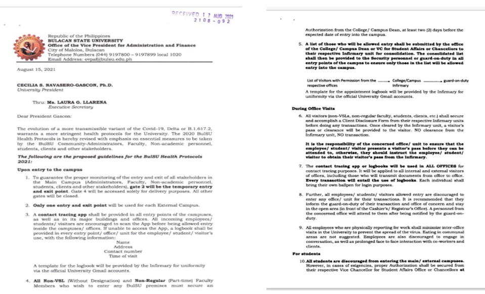
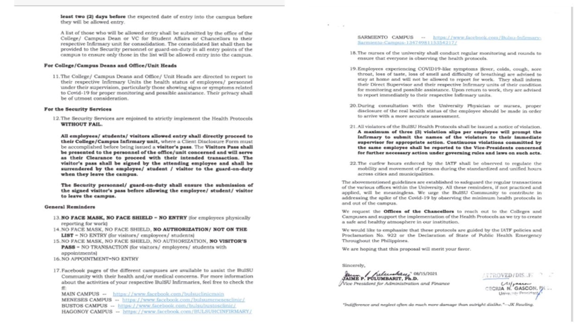
BULSU Preventive Measures (2022)
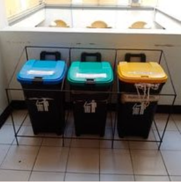
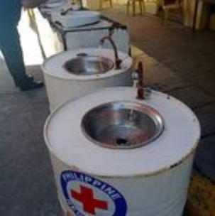
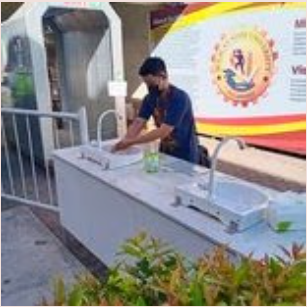
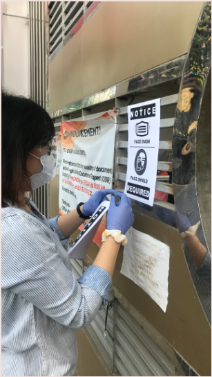
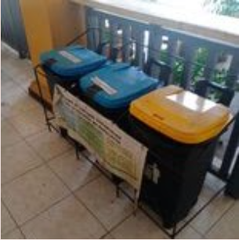
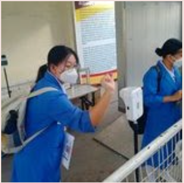
Sample Monitoring and Contact Tracing
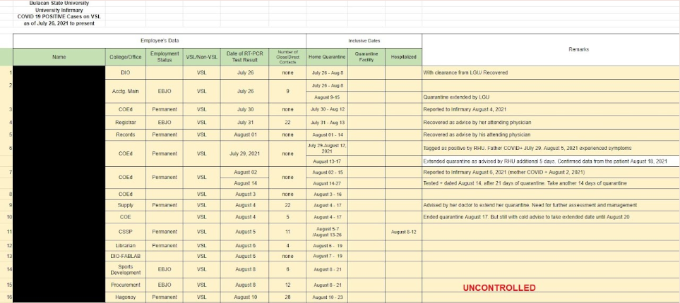
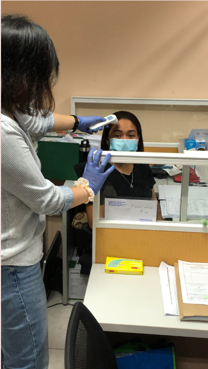
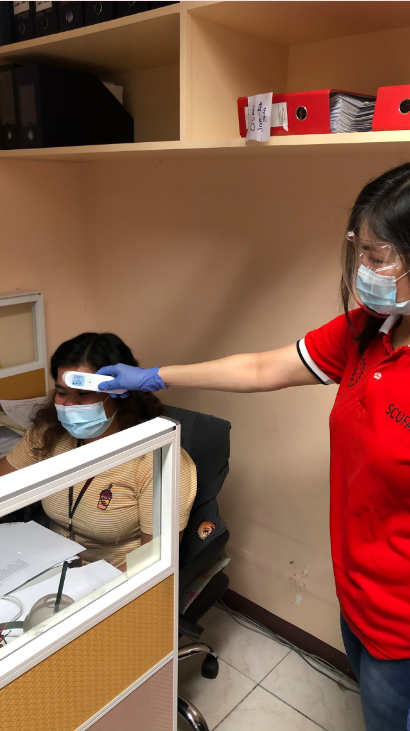
Triage Screening
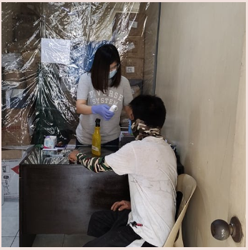
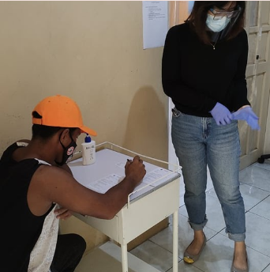
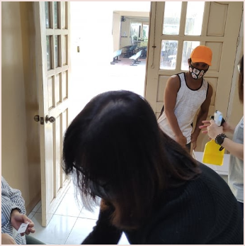
OBSERVANCE OF THE BULACAN STATE UNIVERSITY COVID-19 HEALTH PROTOCOLS 2020
Pursuant to the Inter-Agency Task Force for the Management of Emerging Infectious Diseases (IATF) Guidelines on the Implementation of the General Community Quarantine (GCQ) in the Philippines, and in alignment with the Civil Service Commission Memorandum Circular 10, s2020, the Covid 19 Health Protocols was issued by the Bulacan State University to all its employees.
This guidelines was posted on August 28, 2020 at the Infirmary facebook page (https://www.facebook.com/bulsuclinicmain/) and for queries, the email address was also mentioned in the post.
Although the quarantine restriction has been relaxed by the government, presence of the COVID-19 virus is still at its peak. Hence, a reiteration of the BulSU Health Protocols was given focus.
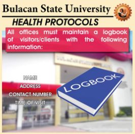
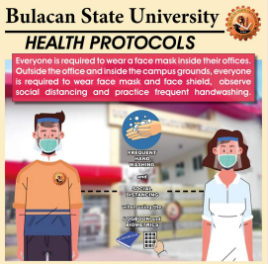
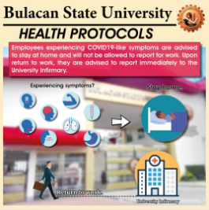
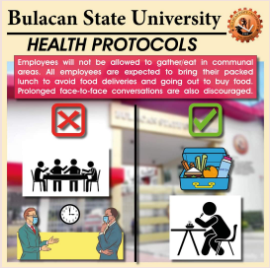
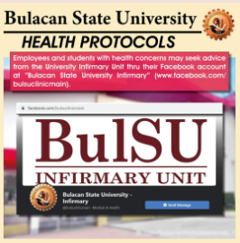
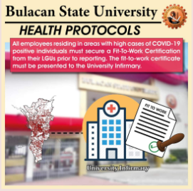
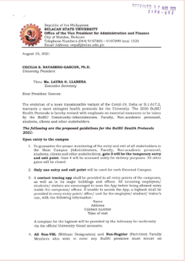
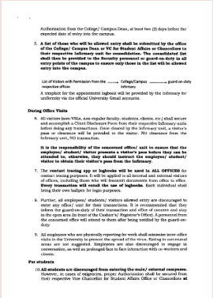
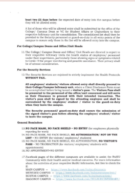
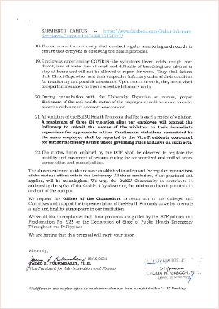
Observance of the BulSU COVID-19 Health Protocols 2021
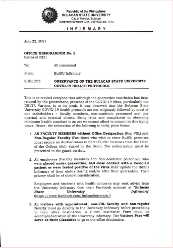
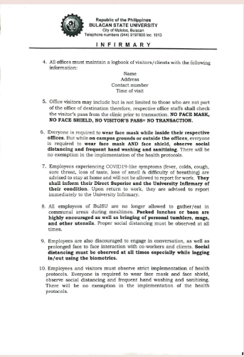
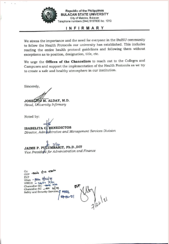
HEALTH PROGRAMS
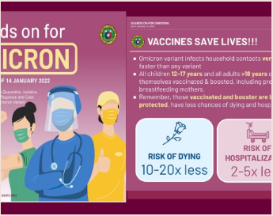
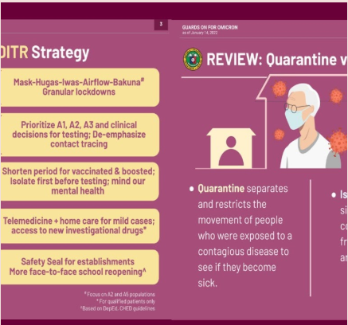
Guards on for Omicron
posted January 14, 2022 at FB page of infirmary unit
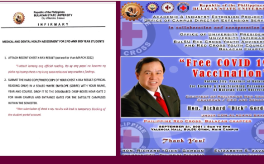
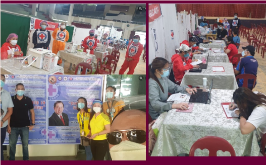
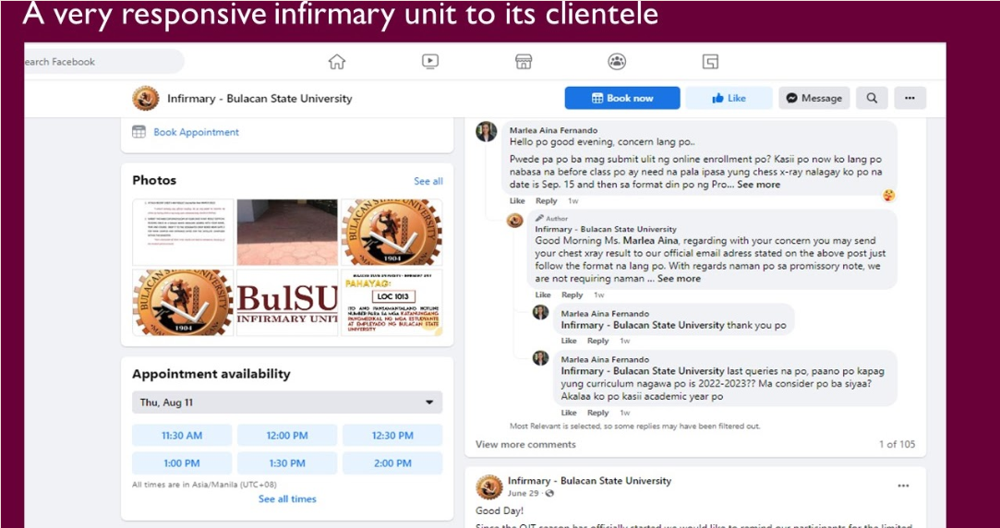
Infirmary - Bulacan State University. (2022). Retrieved August 11, 2022, from Facebook.com website: https://www.facebook.com/bulsuclinicmain
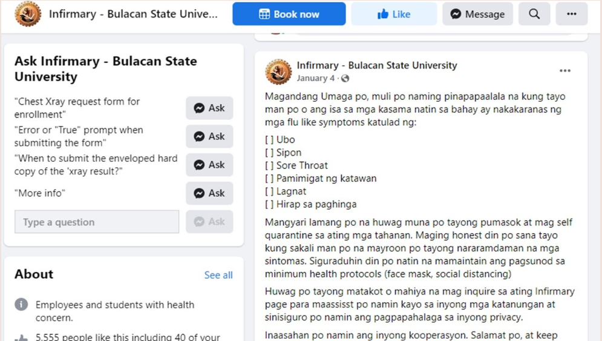
To orient the members of the BulSU Community on Covid-19 Vaccine Program, a webinar was held by the BulSU Infirmary with the College of Nursing on April 21, 2021.
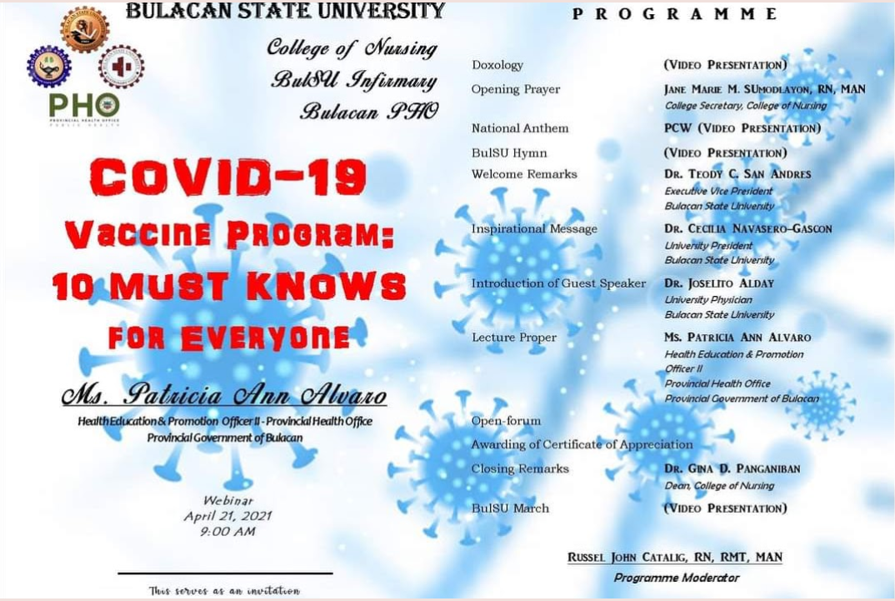
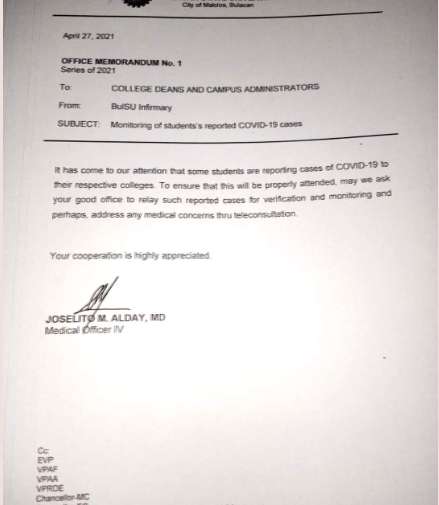
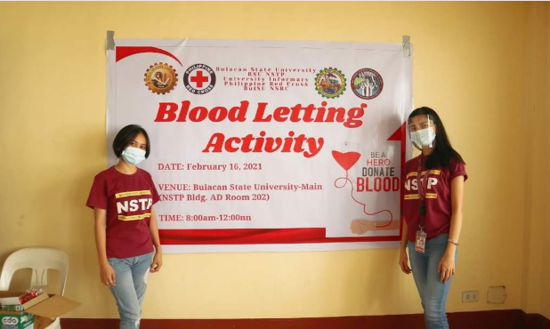
BulSU Cares!!! Despite the Pandemic, Infirmary has a lot ...in the service of the community:
--- monitoring of students' reported Covid-19 Cases
--- in coordination with NSTP department, A Love to share through Blood Letting Activity